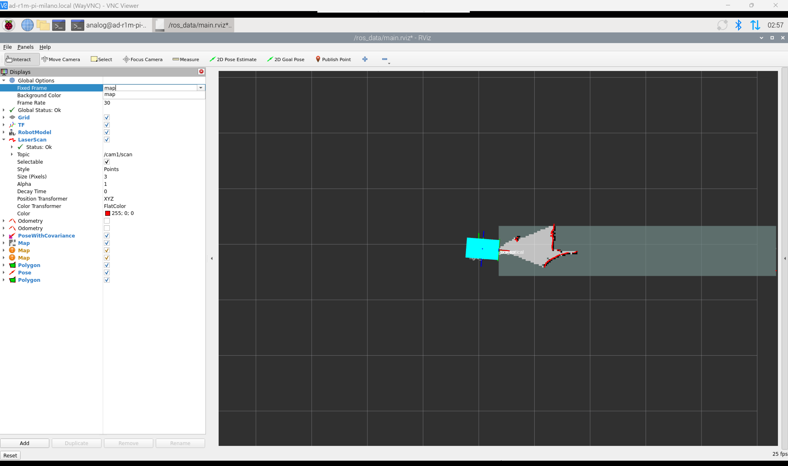
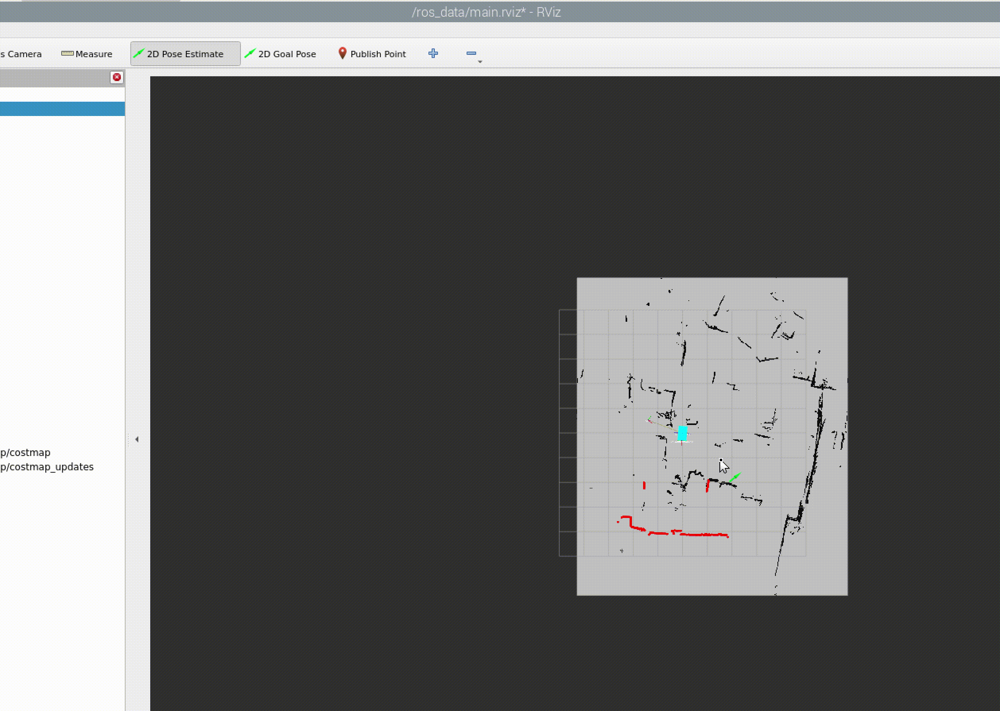

AD-R1M ROS2 Examples
This page provides practical examples for using the AD-R1M robot with ROS2, including mapping, localization, and autonomous navigation.
Mapping with SLAM Toolbox
Create a map of your environment using SLAM Toolbox for real-time mapping.
Starting the Mapping Session
On the robot (via SSH), generate the SLAM configuration and start the services:
ad-r1m mkconfig slam
cd slam
# Check if base services are running
docker ps
# If not running, start base services (robot, tof, teleop, zenoh)
docker compose up -d
# Start the SLAM node for mapping
docker compose up slam -d
See Manage AD-R1M runtime configurations for more details on ad-r1m mkconfig.
Active Docker Compose Services:
Base services (started with docker compose up -d):
zenoh_router- Zenoh middleware routerrobot- motors, IMU, odometry, sensor fusiontof- ToF camera and depth-to-laserscanteleop_crsf- radio control for driving
Profile service (started with docker compose up slam -d):
slam- SLAM Toolbox for mapping
Mapping Process
Start RViz on your host computer (see AD-R1M ROS 2 Getting Started):
cd pixiws pixi run rviz2
Change the Fixed Frame in RViz to
mapArm the robot using the killswitch on the RC handset (switch SA to “ARMED”)
Drive the robot around using the right stick on the remote control
{kind=link}


Map Legend:
White areas = Free space (safe to navigate)
Black areas = Obstacles (walls, objects)
Gray areas = Unexplored/unknown
Saving the Map
After mapping is complete, save the map:
docker compose run save_map
This creates two files in ros_data/ with a timestamped filename:
map.pgm- Grayscale image (white=free, black=occupied, gray=unknown)map.yaml- Map metadata (resolution, origin, thresholds)
SLAM Configuration
SLAM Toolbox parameters: /ros_data/mapping_params.yaml
Key parameters:
slam_toolbox:
ros__parameters:
resolution: 0.05 # Map resolution (meters/pixel)
max_laser_range: 5.0 # Maximum laser range to use
minimum_travel_distance: 0.3 # Min distance before adding scan
Localization
The robot supports two localization modes: AMCL (using a saved map) or blind/dead-reckoning (no map required).
Starting Localization
On the robot (via SSH), generate the navigation configuration and start the services:
ad-r1m mkconfig nav
cd nav
# Check if base services are running
docker ps
# If not running, start base services
docker compose up -d
Choose one of the localization modes:
Option 1: AMCL Localization (requires saved map)
docker compose --profile loc_amcl up -d
Uses AMCL (Adaptive Monte Carlo Localization) with a saved map from ros_data/map.yaml.
Option 2: Blind/Dead-Reckoning Localization (no map required)
docker compose --profile loc_blind up -d
Uses odometry-only localization with an empty map. Useful for testing navigation without a pre-built map. Starts both localization_blind and map_server services.
See Manage AD-R1M runtime configurations for more details.
Setting Initial Pose (AMCL only)
When using AMCL localization, set the robot’s initial pose in RViz:
Click 2D Pose Estimate in the toolbar
Click on the map where the robot is located
Drag to set the orientation (direction robot is facing)
{kind=link}

The robot’s estimated position (red arrow) and uncertainty (purple ellipse) will be displayed.
Tips for good localization:
Set the initial pose as accurately as possible
Drive the robot around to help particles converge
Ensure the saved map matches the current environment
AMCL Topics
Publishes:
/amcl_pose(geometry_msgs/PoseWithCovarianceStamped)Publishes: TF transform (
map→odom)Subscribes:
/scan(laser scan)Subscribes:
/odom(odometry)
{kind=link}
{kind=link}
ROS 2 Topics Reference
Core sensor and control topics used by the AD-R1M:
Sensor Data
/scan- 2D laser scan (from ToF depth-to-laserscan)/cam1/depth_image- Raw depth image from ToF camera/imu- IMU data (angular velocities, linear accelerations)
Odometry and Localization
/diff_drive_controller/odom- Raw odometry from wheel encoders/odom- Fused odometry (encoder + IMU via EKF)/amcl_pose- AMCL localization pose estimate
Motion Control
/cmd_vel_joy- Velocity commands from RC handset/cmd_vel_nav- Velocity commands from Nav2/diff_drive_controller/cmd_vel_unstamped- Final commands to motors
Navigation
/goal_pose- Navigation goals/plan- Global path/map- Occupancy grid map
# List all active topics
ros2 topic list
# Echo a topic
ros2 topic echo /imu --once
# Check topic frequency
ros2 topic hz /scan
For detailed architecture information, see AD-R1M ROS2 Architecture.
<root main_tree_to_execute="MainTree">
<BehaviorTree ID="MainTree">
<Sequence name="navigate_sequence">
<ComputePathToPose goal="{goal}" path="{path}" planner_id="GridBased"/>
<FollowPath path="{path}" controller_id="FollowPath"/>
</Sequence>
</BehaviorTree>
</root>
Load custom behavior trees via the Nav2 parameters:
bt_navigator:
ros__parameters:
default_bt_xml_filename: "/path/to/custom_bt.xml"
Waypoint Following
For multi-waypoint missions, use the waypoint follower action.
Python Waypoint Example
from nav2_simple_commander.robot_navigator import BasicNavigator
from geometry_msgs.msg import PoseStamped
navigator = BasicNavigator()
# Define waypoints
waypoints = []
waypoint1 = PoseStamped()
waypoint1.header.frame_id = 'map'
waypoint1.pose.position.x = 1.0
waypoint1.pose.position.y = 0.0
waypoint1.pose.orientation.w = 1.0
waypoints.append(waypoint1)
waypoint2 = PoseStamped()
waypoint2.header.frame_id = 'map'
waypoint2.pose.position.x = 2.0
waypoint2.pose.position.y = 1.0
waypoint2.pose.orientation.w = 1.0
waypoints.append(waypoint2)
# Start waypoint following
navigator.followWaypoints(waypoints)
while not navigator.isTaskComplete():
feedback = navigator.getFeedback()
print(f'Current waypoint: {feedback.current_waypoint}')
result = navigator.getResult()
print(f'Navigation result: {result}')
Multi-Robot Setup
For multi-robot scenarios, use namespaces to separate robot topics and frames.
Launching Multiple Robots
Each robot should have a unique namespace configured. See Manage AD-R1M runtime configurations for details on setting up robot namespaces.
RViz for Multiple Robots
Configure the Zenoh connection to each robot by updating the ZENOH_CONFIG_OVERRIDE environment variable with the appropriate robot hostname.
Each robot’s topics will be prefixed with its namespace (e.g., /ad_r1m_0/cmd_vel, /ad_r1m_1/cmd_vel).